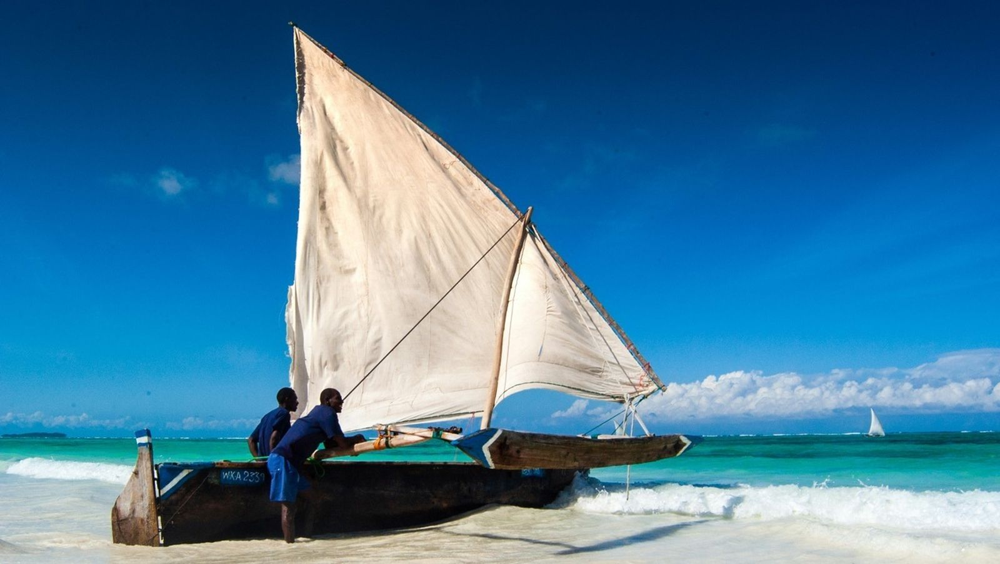
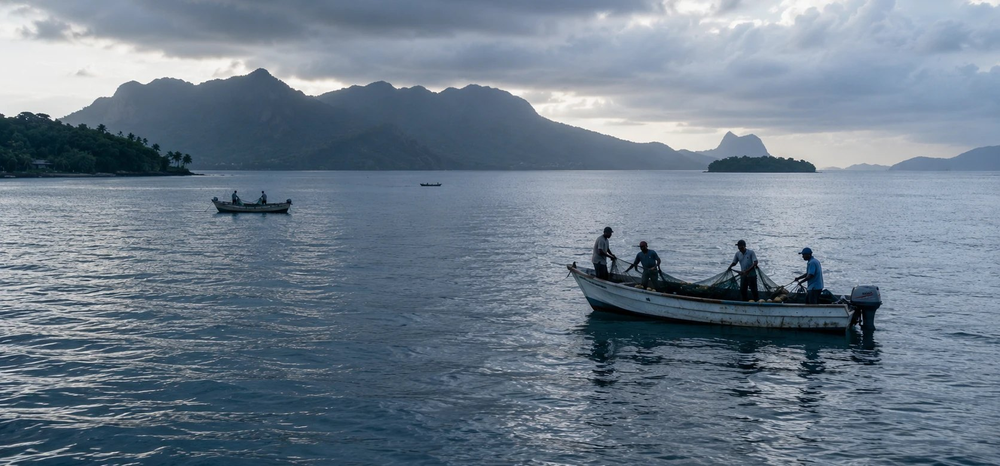
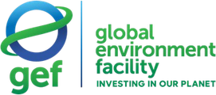

Driving resilience in Big Ocean States
An impact-led blended finance fund bringing meaningful scale, focus and transformative blue economy investment to the island nations that steward a third of the world’s ocean, and receive a fraction of the finance.
Big Ocean States across the Caribbean, Pacific, Atlantic and Indian Ocean
Of global biodiversity sits within these states, alongside 40% of the world’s coral reefs
Of the world’s ocean stewarded by these states through their EEZs
People live in these states, and depend on the ocean around them
What is Outrigger Impact?
Capital built for islands, not adapted to them
Outrigger Impact is a specialised blue economy platform, building environmental and economic resilience in Small Island Developing States by catalysing the blue economy and enhancing the sustainability of ocean resources.
Small Island Developing States, more aptly Big Ocean States, hold extraordinary ocean assets and face extraordinary climate exposure. The finance available to them has never matched either. Outrigger exists to change the arithmetic: to originate and structure investable projects on the islands themselves, to link them across regions so they reach institutional scale, and to bring public, philanthropic and private capital together so that investment reaches them at all.
The opportunity
A $3 trillion blue economy, and a $10 billion adaptation gap
The global blue economy is valued at $1.5 trillion a year and is expected to double by 2030. Big Ocean States are central to it, and structurally excluded from financing it. Life Below Water remains the least funded of the seventeen Sustainable Development Goals: less than 2% of philanthropic and official development assistance funding supports ocean industries.
Annual value of the global blue economy, expected to reach $3tn a year by 2030
Share of GDP the blue economy accounts for in some Big Ocean States, at its highest
Estimated annual global adaptation finance gap for islands
Of the world’s coral reefs sit within these states, alongside over 20% of global biodiversity
Sources: OECD, The Ocean Economy in 2030 (2016); Gonguet and Zhou, Size and Resilience of the Blue Economy in Pacific Island Countries, IMF Working Paper WP/24/255 (2024); World Resources Institute (2025), which estimates a further US$383–717 billion of financing is needed to transition to a sustainable global ocean economy.
Ocean territory at continental scale
Seychelles’ EEZ, at 1.34 million km², is nearly two and a half times the landmass of France. Kiribati controls an ocean territory larger than India. Jamaica’s EEZ exceeds the land area of the United Kingdom.
Willing partners, missing facility
Islands are increasingly willing to leverage ocean assets and develop the sustainable blue economy to address environmental and economic vulnerability. What is missing is a dedicated financial facility built for their scale.
Diversification is the adaptation
Economic concentration is itself a climate risk. Diversifying within the blue economy, across fisheries, aquaculture, marine tourism, the circular economy and ocean energy, is how these economies build durable resilience.

Where we invest
Thirty-five Big Ocean States, across three regions
Thirty-five states, running west to east from the Caribbean, through the Atlantic and Indian Ocean, to the Pacific. Between them they hold exclusive economic zones covering roughly a third of the world’s ocean.
Caribbean, from Belize to Suriname
Atlantic & Indian Ocean, Cabo Verde to Sri Lanka
Pacific, Timor-Leste to Tonga
Where we work
Six sectors of the island blue economy
Outrigger works across the sectors on which island economies most depend, and where environmental and economic resilience are the same problem.
Sustainable blue infrastructure
Ports, vessels and coastal infrastructure that reduce fuel dependency and support national electrification goals.
Circular economy & blue technology
Islands generate more waste per head than the global average with limited disposal capacity. Recovery and reuse are a commercial and an environmental opportunity at once.
Ridge to reef
Water and wastewater treatment, where what happens on land determines the health of the reef offshore.
Ocean-based renewable energy
Island grids run largely on imported diesel. Distributed renewables cut both emissions and the cost of energy security.
Sustainable seafood
Fisheries and aquaculture are central to food security and to export earnings across the Caribbean and Pacific.
Ocean conservation & ecotourism
Conservation that carries a business model rather than depending on a subsidy, and tourism that pays for the ecosystem it depends on.
Impact & ESG
Seven themes. Fourteen indicators. One framework built for islands.
Impact is measured against a published framework, with ESG and impact indicators embedded in the investment process rather than reported afterwards.
A SIDS-tailored framework
Seven impact themes with dedicated KPIs for reporting, derived from the fund’s own theory of change.
IFC performance standards
All investments must uphold sustainability and ESG standards including the IFC performance standards, and achieve best-practice certifications where relevant.
SFDR Article 8
The fund is classified under Article 8 of the Sustainable Finance Disclosure Regulation, and contributes to the Sustainable Development Goals and Global Biodiversity Framework targets.
A dedicated ESG team
Separate project monitoring and reporting of ESG progress, aligned with UNEP’s Sustainable Blue Economy Finance Principles.
OTAF
The facility that makes the pipeline possible
The Outrigger Technical Assistance Facility supports the capacity, capability and ecosystem for blue economy SMEs across Small Island Developing States, working in tandem with the fund to catalyse investment in early-stage projects.
It is already running. Four grants have been approved since mid-2025: an invasive-lionfish supply chain in Belize, sargassum-to-biogas in Grenada, fisheries data across five Atlantic and Indian Ocean states, and a community seaweed cooperative in the Solomon Islands.
Grants approved since the facility soft-launched in mid-2025
Committed to date, across Belize, Grenada, the Solomon Islands and five Atlantic and Indian Ocean states
Target facility size, with grants and repayable loans of $50–250k
Grants to be deployed over the facility’s three-year term
Establishing a supply chain for invasive lionfish
Lionfish leather to the fashion industry, meat to the pet food industry, and a new revenue stream for local fishers.
INVERSA · Awarded January 2026 · US$250,000
Electricity from the biodigestion of sargassum
Sargassum and organic waste become biogas, fertiliser and grid electricity in a commercial-scale pilot.
SarGas Limited · Approved December 2025 · US$250,000
Supporting small-scale fisheries through data tools
ABALOBI’s MONITOR platform brings community-generated catch data to five island states.
ABALOBI · Approved May 2026 · US$250,000
Seaweed farming for reef resilience and livelihoods
A community-led cooperative seaweed platform offering alternative livelihoods to fisher families in Western Province.
Positive Change for Marine Life · Approved March 2026 · US$250,000
A grant from the facility is not an investment, and it is not a commitment by Outrigger Impact Fund I to invest. Each project’s expected outcomes are set out in the grant portfolio.
Anchor investors
Who committed at first close
Two development finance institutions made cornerstone commitments to Outrigger Impact Fund I at its first close in July 2026.

Technical Assistance Facility
Who backs OTAF
The Technical Assistance Facility is funded separately from the fund, by grant.


Outrigger Impact Fund I
The fund reached first close in July 2026
Outrigger Impact Fund I is a blended finance vehicle providing equity and debt financing to blue economy businesses across Small Island Developing States. It reached first close on 28 July 2026 with cornerstone commitments from the Nordic Development Fund and the Luxembourg–European Investment Bank Climate Finance Platform, and is targeting a total size of US$100 million with a final close anticipated in 2027.
Information about the fund’s strategy, structure and terms is a financial promotion under the Financial Services and Markets Act 2000. It is not published on this website. Professional investors who would like to know more are welcome to contact Simon Dent or Jeremy Milward directly.